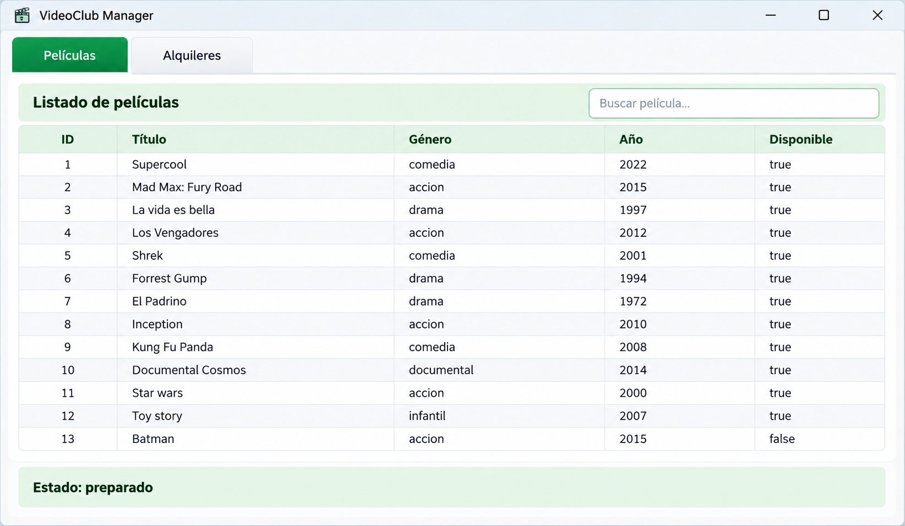
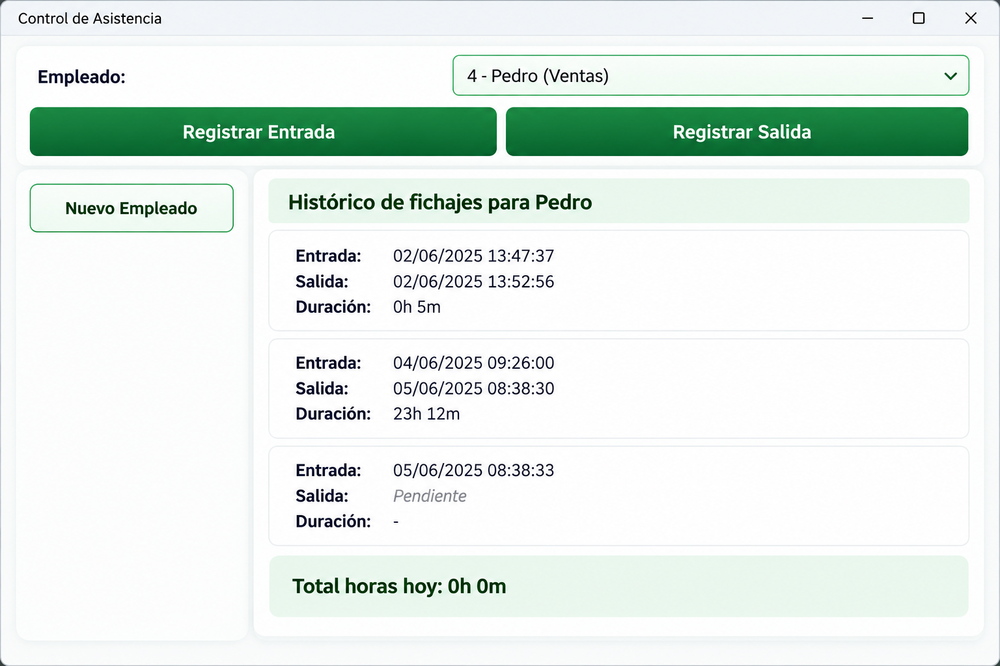
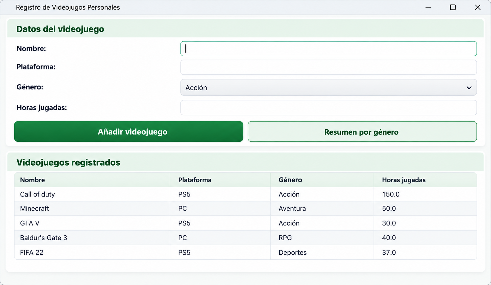
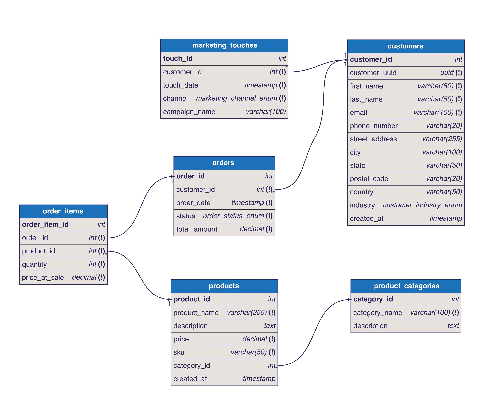
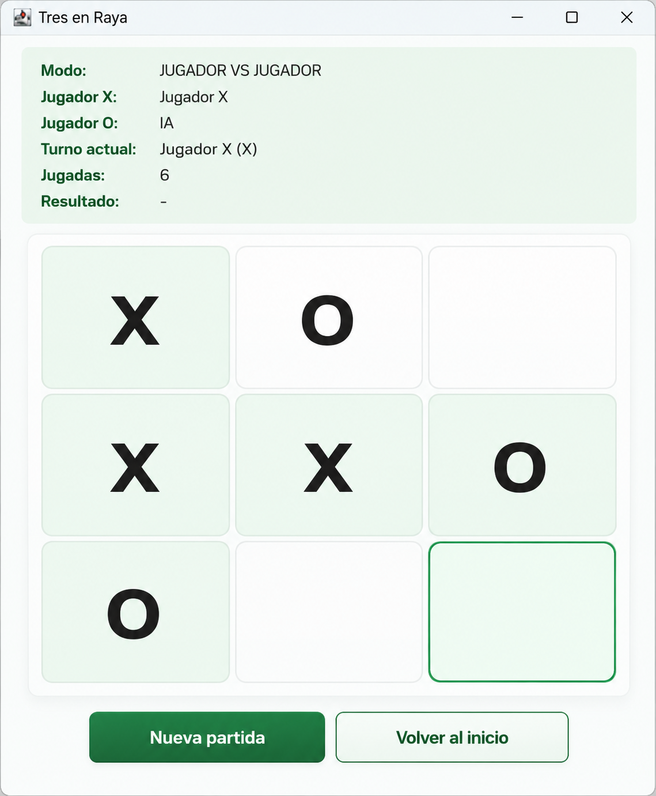

Videoclub
01Aplicación de escritorio para gestionar películas, clientes y alquileres conectada a una base de datos.
Ver repositorioESTUDIANTE DE 2.º DAM
Desarrollo aplicaciones y convierto ideas en soluciones digitales útiles.
Me interesa el desarrollo de aplicaciones, las bases de datos y el desarrollo web. Aquí comparto proyectos realizados durante mi formación en DAM y las tecnologías que utilizo.
UN POCO SOBRE MÍ
Me gusta entender cómo funcionan las cosas y construir soluciones con ellas.
Actualmente curso Desarrollo de Aplicaciones Multiplataforma (DAM) en Digitech FP (2025–2027), en Málaga. Durante mi formación he trabajado con aplicaciones de escritorio, desarrollo Android, páginas web y bases de datos relacionales.
He desarrollado aplicaciones con Java y Swing, aplicaciones Android con Kotlin y proyectos web con HTML, CSS y JavaScript. También he trabajado con JDBC, PostgreSQL, MySQL, Git y Docker.
Busco aplicar lo aprendido, adquirir experiencia práctica y seguir creciendo como desarrollador. En 2025 participé en ASTI Robotics Challenges, un programa educativo sobre robótica móvil y tecnologías STEM.
Aprender construyendo: cada proyecto es una oportunidad para mejorar.
TRABAJO SELECCIONADO
Una selección de proyectos académicos y personales, con distintas tecnologías y objetivos.

Aplicación de escritorio para gestionar películas, clientes y alquileres conectada a una base de datos.
Ver repositorio
Aplicación para guardar, buscar y consultar recetas de cocina mediante gestión de archivos.
Ver repositorio
Sistema para registrar entradas y salidas de empleados y consultar el historial de fichajes.
Ver repositorio
Aplicación para añadir, consultar, modificar y eliminar videojuegos de una colección personal.
Ver repositorio
Diseño y desarrollo de una web para una clínica ficticia, con estructura responsive y contenidos organizados.
Ver página
Proyecto de tienda online y organización de los datos necesarios para gestionar sus productos.
Ver repositorio
Juego de escritorio con interfaz gráfica, lógica de partida y opciones para iniciar nuevas partidas.
Ver repositorioHERRAMIENTAS DE TRABAJO
Tecnologías con las que he trabajado durante mi formación y en proyectos personales.
Me esfuerzo por escribir código claro, organizar bien los proyectos y aprender de cada problema que resuelvo.
MI RECORRIDO
Mi recorrido académico, formación complementaria y aprendizaje a través de proyectos.
Digitech FP · Málaga, España · 2025–2027
Formación en programación, acceso a datos, desarrollo de interfaces, sistemas y creación de aplicaciones multiplataforma.
Programa educativo sobre robótica móvil y tecnologías STEM, realizado entre enero y febrero de 2025.
IES Miraflores de los Ángeles · 2023–2025
Formación previa al ciclo de Desarrollo de Aplicaciones Multiplataforma.
Nivel de inglés B1.
HABLEMOS
¿Tienes una propuesta, una oportunidad de prácticas o quieres hablar sobre algún proyecto? Puedes encontrarme aquí.
Estoy interesado en oportunidades donde pueda aportar, aprender del equipo y seguir creciendo como desarrollador.
Escríbeme